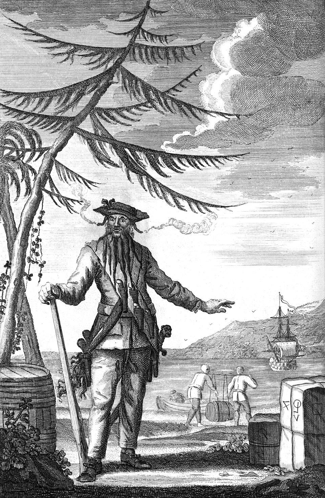

Reputation Made Real
Edward Teach died at Ocracoke in 1718 — but the world had spent years telling itself what Blackbeard was, and the telling was stronger than the man.

Reputation Made Real
Edward Teach died at Ocracoke in 1718 — but the world had spent years telling itself what Blackbeard was, and the telling was stronger than the man.
Feature map
Level-by-level features, as the figure refined them.
Fly the Colors
Bonus action · 1 CE · 120-ft broadcast.
Perform one known Rumor for every creature that can perceive you within 120 ft. A witness who has not personally disproved the claim Believes — not charmed, not frightened, but convinced, and conviction has teeth. You may maintain 1 active Rumor at a time (2 at 6th level, 3 at 11th). A witness who sees through a tale is immune to it for 24 hours — conviction, once broken, takes time to re-seat.
Rumors of the Devil
Passive · each Rumor names its own undoing.
Your known Rumors, each with its verbatim Exposure: Bullets Don't Take Him — the first ranged attack each round made against you by a Believer is at disadvantage; if it still hits for 2 × your PB or more after mitigation, the Rumor is Exposed to all witnesses. No One Escapes the Flag — a Believer that treats you as a threat spends 2 ft of movement per 1 ft moved directly away from you after the first 20 ft; if it escapes 60 ft or farther from you in one turn, the Rumor is Exposed. Smoke Is His Sight — Believers gain no defensive benefit from smoke or darkness you can see through; a creature that successfully Hides in it Exposes the Rumor to all observers. Every tale you tell names its own public disproof — a rumor that cannot be disproved is not a rumor; it's a god, and you are honest about the difference.
Call the Bluff
Action · Insight or Investigation vs. your technique DC.
A Believer may spend an action studying one of your Rumors — an Insight or Investigation check against your technique DC. On a success, that creature gains personal immunity to the Rumor and may loudly expose it to every creature that can perceive the call. Fear that can be publicly disproved is the honest version of this fantasy — study the claim, see through it, shout the truth, and the fear breaks.
Tell It Again
Passive · the retelling is a ritual.
Believers who repeat your claim outside your presence spread Belief for 24 hours — every tavern retelling is a little ritual, and you need not be there to feed on it. A creature that believes a secondhand retelling counts as a Believer of that Rumor until the 24 hours end or it personally disproves the claim.
The Monster Outgrows the Man
Passive · confirmation converts.
When a Believer flees, surrenders, or drops to 0 HP while visibly affected by one of your Rumors, nearby witnesses convert without another performance — they Believe, no Fly the Colors required. You feed on your own confirmation; every rout your enemies witness becomes a mass conversion, live, in front of them.
Established Legend
Passive · established legends die harder.
Choose one Rumor per initiative count. That Rumor now requires two different successful public Tests in the same round to be fully Exposed. A creature that performs its own successful Test still gains personal immunity to the Rumor regardless — the proof works for the prover, but the legend survives the crowd.
Maximum, Domain, or equivalent.
Capstone material.
A General History of the Pyrates
Your grandest trick, deployed over a battlefield or a port: every known unexposed Rumor circulates simultaneously among all perceiving creatures within 120 ft — they Believe for the duration. But the theater has its price: a spectacular Exposure of any Rumor lets every witness immediately test to reject all circulating Rumors. Whoever faces the full history must answer just as spectacularly — or become part of the story.
Three Laps Around the Ship
The legend says the body swam three laps around the ship before sinking — the story refused the ending. When you are reduced to 0 HP, drop to 1 HP instead and immediately perform Fly the Colors as a free action. The telling outlives the man.
Build-defining options.
Historical-figure techniques grant no feats — the figure's art is complete as written, and the builder's feat picker excludes these techniques. Take the progression as the build.